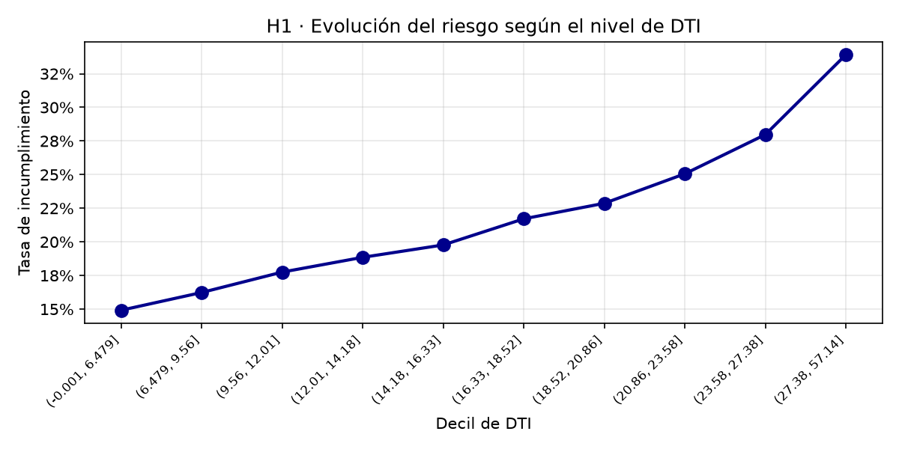
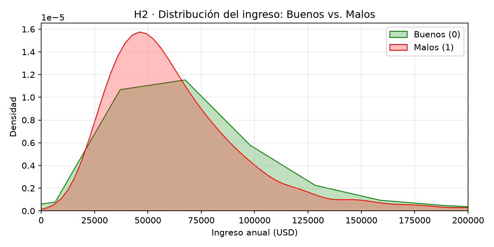
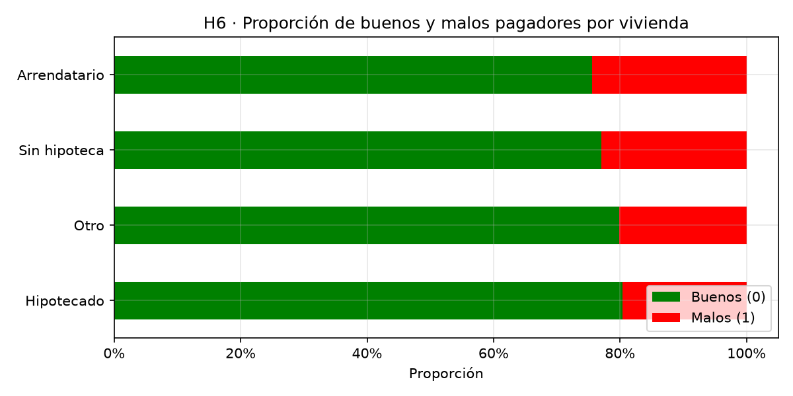
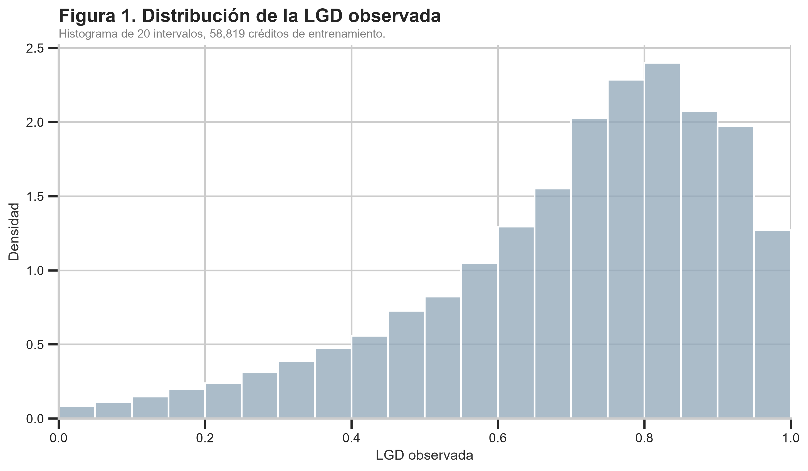

<!doctype html>
<html lang="es">
<head>
<meta charset="utf-8"><meta name="viewport" content="width=device-width, initial-scale=1">
<meta name="theme-color" content="#111d35">
<meta name="description" content="Informe académico sobre estimación del riesgo de incumplimiento crediticio con regresión logística, redes neuronales y una scorecard interpretable.">
<meta property="og:type" content="article"><meta property="og:title" content="Riesgo de crédito | Redes neuronales para datos tabulares"><meta property="og:description" content="Comparación temporal de modelos de probabilidad de incumplimiento y construcción de una scorecard interpretable.">
<title>Riesgo de crédito | Redes neuronales para datos tabulares</title>
<link rel="preconnect" href="https://cdn.jsdelivr.net" crossorigin>
<link rel="stylesheet" href="https://cdn.jsdelivr.net/npm/katex@0.16.11/dist/katex.min.css">
<script defer src="https://cdn.jsdelivr.net/npm/katex@0.16.11/dist/katex.min.js"></script>
<script defer src="https://cdn.jsdelivr.net/npm/katex@0.16.11/dist/contrib/auto-render.min.js"></script>
<link rel="stylesheet" href="assets/css/base.css?v=20261030">
<link rel="stylesheet" href="assets/css/hero.css?v=20261030">
<link rel="stylesheet" href="assets/css/layout.css?v=20261030">
<link rel="stylesheet" href="assets/css/components.css?v=20261030">
<link rel="stylesheet" href="assets/css/charts.css?v=20261030">
<link rel="stylesheet" href="assets/css/report.css?v=20261030">
<link rel="stylesheet" href="assets/css/responsive.css?v=20261030">
<link rel="stylesheet" href="assets/css/print.css?v=20261030">
</head>
<body>
<a class="skip-link" href="#contenido">Saltar al contenido principal</a>
<div class="reading-progress" aria-hidden="true"><span id="progress-bar"></span></div>
<header class="hero" id="inicio">
  <div class="hero-inner">
    <p class="eyebrow">Trabajo académico · 2026</p>
    <h1>
      Riesgo de crédito,
      <br>
      <span>visto desde los datos.</span>
    </h1>
    <div class="hero-actions">
      <a
        class="button button-primary"
        href="https://github.com/Anarragan/RNA-Trabajo2-Redes-neuronales-para-datos-tabulares"
        target="_blank"
        rel="noopener noreferrer"
      >
        Repositorio ↗
      </a>

      <a
        class="button button-ghost"
        href="https://youtu.be/s9hygc3G09k"
        target="_blank"
        rel="noopener noreferrer"
      >
        Video promocional ↗
      </a>

      <a
        class="button button-ghost"
        href="https://rna-trabajo2-redes-neuronales-para-datos-tabulares-meddx5mvmap.streamlit.app/"
        target="_blank"
        rel="noopener noreferrer"
      >
        Aplicación web ↗
      </a>

      <details class="video-dropdown">
        <summary class="button button-ghost">Videos de contribución <span aria-hidden="true">⌄</span></summary>
        <div class="video-dropdown-menu">
          <a href="https://youtu.be/Y8RJNbRCAFU" target="_blank" rel="noopener noreferrer">
            Video de Ana ↗
          </a>
          <a href="https://youtu.be/_8jKWtpQcQo" target="_blank" rel="noopener noreferrer">
            Video de Jhojan ↗
          </a>
          <a href="https://youtu.be/RPwXXQZVoIg" target="_blank" rel="noopener noreferrer">
            Video de Samuel ↗
          </a>
        </div>
      </details>
    </div>
  </div>
</header>

<main class="layout" id="contenido">
  <aside class="sidebar" aria-label="Navegación del informe">
    <p class="sidebar-title">En este informe <span aria-hidden="true">⌄</span></p>
    <ol class="toc" id="toc-desktop">
      <li><a href="#resumen">Resumen ejecutivo</a></li><li><a href="#introduccion">Introducción</a></li><li><a href="#datos">Datos y preprocesamiento</a></li><li><a href="#eda">Análisis descriptivo e hipótesis</a></li><li><a href="#fundamentos">Fundamentos matemáticos</a></li><li><a href="#metodologia">Metodología experimental</a></li><li><a href="#resultados">Resultados</a></li><li><a href="#discusion">Discusión y conclusiones</a></li><li><a href="#ia">Uso de IA</a></li><li><a href="#referencias">Referencias</a></li>
    </ol>
   </aside>

  <div class="content">
    <details class="mobile-toc">
      <summary>Contenido del informe</summary>
      <ol class="toc" id="toc-mobile">
        <li><a href="#resumen">Resumen ejecutivo</a></li><li><a href="#introduccion">Introducción</a></li><li><a href="#datos">Datos y preprocesamiento</a></li><li><a href="#eda">Análisis descriptivo e hipótesis</a></li><li><a href="#fundamentos">Fundamentos matemáticos</a></li><li><a href="#metodologia">Metodología experimental</a></li><li><a href="#resultados">Resultados</a></li><li><a href="#discusion">Discusión y conclusiones</a></li><li><a href="#ia">Uso de IA</a></li><li><a href="#referencias">Referencias</a></li>
      </ol>
    </details>

        <section class="section" id="resumen">
      <p class="section-kicker">00 · Síntesis</p>
      <h2>Resumen ejecutivo</h2>
      <p class="lead-paragraph">
        Este trabajo evalúa la estimación del riesgo de incumplimiento crediticio utilizando información disponible al momento de la solicitud. 
        Se comparan dos enfoques de clasificación: una regresión logística como referencia interpretable y un perceptrón multicapa (MLP) en PyTorch para capturar relaciones no lineales.
      </p>
      
      <p>
        A partir del conjunto de datos de LendingClub, se definió una variable objetivo binaria (0: cumplimiento, 1: incumplimiento) acotada a 
        créditos originados antes del 1 de enero de 2013. Esta delimitación evita el sesgo por falta de desenlace observado en créditos a 60 
        meses. Para prevenir fuga de información, se aplicó una partición temporal estricta en entrenamiento, validación y prueba, excluyendo 
        variables posteriores al desembolso o derivadas de decisiones de la plataforma.
      </p>
      
      <p>
        Los modelos se valuaron en la partición de prueba N = 32.403 frente a una tasa de mora observada de 16,44 %,
         el MLP alcanzó un ROC-AUC de 0,6827 frente a 0,6809 de la Regresión Logística. Esta paridad en discriminación sugiere que, en estos datos, la relación del riesgo es en buena parte lineal. 
         Sin embargo, el MLP demostró mayor precisión en calibración, estimando un riesgo promedio del 16,13 % próximo al 16,44 % real, mientras que la Regresión Logística estimó un promedio de 14,74 %, por debajo de la tasa real.
      </p>
      
      <div class="callout">
        <strong>Hallazgo central:</strong> 
        La mayor complejidad del MLP no tradujo en una ganancia sustancial de discriminación frente a la Regresión Logística, en línea con el alto desempeño de modelos lineales en datos tabulares de originación. No obstante, la red neuronal aporta un valor clave al ofrecer
         probabilidades absolutas de riesgo mejor calibradas para la toma de decisiones financieras.
      </div>
    </section>

    <section class="section" id="introduccion">
      <p class="section-kicker">01 · Contexto</p><h2>Introducción</h2>
      <p class="lead-paragraph">El riesgo de crédito es la posibilidad de que un prestatario incumpla sus obligaciones y la entidad otorgante registre una pérdida. Se descompone usualmente en la probabilidad de incumplimiento (PD), la pérdida dado incumplimiento (LGD) y la exposición al incumplimiento (EAD), cuyo producto define la pérdida esperada. Estimar estos componentes en la originación respalda la decisión de aprobar o rechazar una solicitud.</p>
      <p>La regresión logística ha sido el estándar de la industria por su sencillez e interpretabilidad (<a class="cite" href="#ref-siddiqi">Siddiqi, 2006</a>). Los primeros estudios comparativos encontraron que clasificadores simples como ella eran muy competitivos frente a las redes neuronales (<a class="cite" href="#ref-baesens">Baesens et al., 2003</a>), aunque benchmarks posteriores, más amplios, mostraron que algunos clasificadores avanzados, en particular los ensambles, la superan (<a class="cite" href="#ref-lessmann">Lessmann et al., 2015</a>). En datos tabulares, además, los modelos basados en árboles siguen superando a las redes profundas en conjuntos de tamaño medio (<a class="cite" href="#ref-grinsztajn">Grinsztajn et al., 2022</a>).</p>
      <p>En este trabajo se comparará una regresión logística de referencia y un perceptrón multicapa (MLP) en PyTorch para estimar la PD, evaluarlos con una partición cronológica, convertir la salida de la red en una scorecard interpretable y, en una segunda parte, estimar la LGD con un modelo lineal y un MLP para combinarlas en una pérdida esperada.</p>
      <p>El diseño y desarrollo se realizao para el área de riesgos de una institución que otorga créditos decide si aprueba o rechaza una solicitud y con qué umbral de riesgo, usando solo los datos declarados por el solicitante y los reportados por el buró de crédito al recibirla. El resultado es la PD y la pérdida esperada de cada crédito.</p>
    </section>

    <section class="section" id="datos">
      <p class="section-kicker">02 · Fuente, construcción y pipeline</p><h2>Datos y preprocesamiento</h2>
      <h3>2.1 Fuente y variable objetivo</h3>
      <p>Se utilizó el archivo <code>loan.csv</code> del conjunto público <em>Credit Risk Dataset</em> de Kaggle (<a class="cite" href="#ref-ranadeep">ranadeep, s. f.</a>). El script de preparación construye la etiqueta, deriva variables de originación y guarda la base de modelamiento. La etiqueta binaria se obtiene de <code>loan_status</code>: los estados de cumplimiento valen cero y los de incumplimiento, uno.</p>
      <div class="grid-2"><article class="info-card"><span class="pill good">Clase 0 · Cumplido</span><h3 style="margin-top:10px">Fully Paid</h3><p>Incluye también <code>Does not meet the credit policy. Status:Fully Paid</code>.</p></article><article class="info-card"><span class="pill bad">Clase 1 · Incumplido</span><h3 style="margin-top:10px">Charged Off / Default</h3><p>Incluye <code>Charged Off</code>, <code>Default</code>, <code>Late (31-120 days)</code> y su estado equivalente de la política de crédito.</p></article></div>
      <h3>2.2 Ventana temporal y censura</h3>
      <p>El preprocesamiento conserva únicamente los créditos con <code>issue_d</code> anterior al 1 de enero de 2013 (<code>FIN_DATOS = 2013-01-01</code>), por lo que el periodo modelado llega hasta diciembre de 2012. Esta delimitación evita el sesgo por falta de desenlace observado en créditos a 60 meses, que de otro modo seguirían vigentes.</p>
      <div class="callout warning"><strong>Precaución con los estados no terminales.</strong><p>Los registros <code>Current</code> no se etiquetan como buenos ni malos porque su resultado final no se conoce en el conjunto utilizado. Esta decisión evita asignar una etiqueta especulativa, pero también puede introducir sesgo de selección: los créditos con desenlace observado podrían no representar exactamente a todos los créditos originados.</p></div>
      <h3>2.3 Prevención de fuga de información</h3>
      <p>Se retiraron atributos que no estarían disponibles al originar un crédito o que reflejan decisiones posteriores de LendingClub, entre ellos <code>grade</code>, <code>sub_grade</code>, <code>int_rate</code>, <code>recoveries</code>, <code>total_pymnt</code> y <code>last_pymnt_amnt</code>. También se descartaron las columnas con más de 97 % de valores nulos.</p>
      <div class="callout danger"><strong>Por qué importa.</strong><p>Un modelo puede alcanzar métricas artificialmente altas si recibe información generada después de la decisión que pretende apoyar. La evaluación sería entonces poco representativa de un escenario real de originación.</p></div>
      <h3>2.4 Partición temporal</h3>
      <p>La variable <code>issue_d</code> determina los cortes (Tabla 1). En lugar de mezclar créditos de distintos años, el procedimiento simula un despliegue: aprender del pasado, seleccionar con un periodo posterior y medir en uno aún más reciente. La partición de prueba contiene 32.403 créditos y no interviene en la selección de hiperparámetros ni en la parada temprana.</p>
      <div class="table-wrap"><table><caption>Tabla 1. Partición temporal del conjunto de datos. Fuente: elaboración propia con base en <code>preprocesamiento.py</code> y <code>t4_semillas.csv</code>.</caption><thead><tr><th>Conjunto</th><th>Regla temporal</th><th class="numeric">Tasa de incumplimiento observada</th></tr></thead><tbody>
        <tr><td><strong>Entrenamiento</strong></td><td><code>issue_d &lt; 2012-01-01</code> (hasta dic. 2011)</td><td class="numeric">15,78 %</td></tr><tr><td><strong>Validación</strong></td><td>01 ene. – 30 jun. 2012</td><td class="numeric">17,27 %</td></tr><tr><td><strong>Prueba</strong></td><td>01 jul. – 31 dic. 2012</td><td class="numeric">16,44 %</td></tr>
      </tbody></table></div>
      <div class="callout warning"><strong>Deriva temporal y observabilidad.</strong><p>La prevalencia de incumplimiento aumenta entre particiones. Puede reflejar cambios en la población, condiciones de originación y condiciones económicas, además del efecto de excluir préstamos sin desenlace observado. Por ello, una misma puntuación o probabilidad puede no conservar su interpretación temporal sin monitoreo y recalibración.</p></div>
      <h3>2.5 Variables y pipeline de preprocesamiento</h3>
      <p>Un único preprocesador, compartido por la regresión logística, la red neuronal y la scorecard, entrega a ambos modelos <strong>38 características</strong>, resultado de crear cuatro ratios financieros y expandir las categóricas con One-Hot Encoding (Tabla 2).</p>
      <div class="table-wrap"><table><caption>Tabla 2. Variables y transformaciones principales. Fuente: preprocesador del repositorio.</caption><thead><tr><th>Familia</th><th>Variables representativas</th><th>Tratamiento</th></tr></thead><tbody>
        <tr><td>Continuas (11)</td><td><code>loan_amnt</code>, <code>annual_inc</code>, <code>dti</code>, <code>revol_bal</code>, <code>revol_util</code>, <code>antiguedad_hist_anios</code>, <code>emp_length_anios</code>, <code>ratio_prestamo_ingreso</code>, <code>ingreso_libre</code>, <code>saldo_promedio_cuenta</code>, <code>ratio_cuentas_activas</code></td><td>Transformación <code>log(1+x)</code> para ingreso y saldo rotativo; imputación, recorte 1–99 y estandarización.</td></tr><tr><td>Conteos (5)</td><td><code>delinq_2yrs</code>, <code>inq_last_6mths</code>, <code>open_acc</code>, <code>pub_rec</code>, <code>total_acc</code></td><td>Imputación con mediana, recorte por percentiles y estandarización.</td></tr><tr><td>Indicadores (3)</td><td><code>term_60m</code>, <code>ind_mora_previa</code>, <code>ind_registro_publico</code></td><td>Variables binarias conservadas como 0/1.</td></tr><tr><td>Faltantes (1)</td><td><code>emp_length_nulo</code></td><td>Indicador creado antes de imputar la antigüedad laboral.</td></tr><tr><td>One-hot (18)</td><td><code>purpose</code> (13), <code>home_ownership</code> (3), <code>verification_status</code> (2)</td><td>Se omite una categoría de referencia por cada variable categórica.</td></tr><tr><td><strong>Total (38)</strong></td><td>11 + 5 + 3 + 1 + 18</td><td><strong>38 columnas de entrada para ambos modelos.</strong></td></tr>
      </tbody></table></div>
      <p class="small muted">La categoría de referencia del propósito es <code>debt_consolidation</code>; para vivienda, <code>MORTGAGE</code>; y para verificación, <code>Not Verified</code>. Una categoría no vista durante el entrenamiento queda codificada como la referencia.</p>
      <p>Las transformaciones se aplican en tres pasos. Todos sus parámetros (medianas, percentiles de recorte, media y desviación) se calculan solo con el conjunto de entrenamiento y se reutilizan en validación y prueba, de modo que los periodos posteriores no influyen en el ajuste.</p>
      <div class="steps"><article class="step"><strong>Transformar e imputar</strong><p>Aplicar <code>log(1+x)</code> a ingreso y saldo rotativo; completar valores numéricos faltantes con medianas aprendidas en entrenamiento.</p></article><article class="step"><strong>Limitar y escalar</strong><p>Recortar las variables numéricas en los percentiles 1 y 99 y estandarizar con media y desviación del entrenamiento.</p></article><article class="step"><strong>Codificar categorías</strong><p>Crear indicadores one-hot y conservar los campos binarios ya construidos.</p></article></div>
    </section>

    <section class="section" id="eda">
      <p class="section-kicker">03 · Exploración</p><h2>Análisis descriptivo e hipótesis</h2>
      <p>Antes de ajustar los modelos se formularon seis hipótesis guiadas por intuiciones de riesgo crediticio. Las hipótesis se resumen en la Tabla 3. La tasa observada de incumplimiento por partición (Figura 1) permite comparar la composición del riesgo entre ventanas; las atribuciones de la scorecard aportan una segunda lectura, pero no deben confundirse con efectos causales.</p>
      <div class="chart-card"><div class="chart-head"><div><h3>Figura 1. Incumplimiento observado por periodo</h3><p>Proporción de créditos clasificados como incumplidos en cada partición.</p></div><span class="chart-tag">Tasa observada</span></div>
        <div class="split-bars" role="img" aria-label="La tasa de incumplimiento es 15,78 por ciento en entrenamiento, 17,27 por ciento en validación y 16,44 por ciento en prueba.">
          <div class="split-row"><span class="split-name">Entrenamiento</span><div class="bar-track"><div class="bar-fill" style="width:78.88%"></div></div><span class="split-value">15,78 %</span></div><div class="split-row"><span class="split-name">Validación</span><div class="bar-track"><div class="bar-fill" style="width:86.33%"></div></div><span class="split-value">17,27 %</span></div><div class="split-row"><span class="split-name">Prueba</span><div class="bar-track"><div class="bar-fill" style="width:82.21%"></div></div><span class="split-value">16,44 %</span></div>
        </div><p class="chart-foot">Escala visual máxima: 20 %. Fuente: elaboración propia con las tasas consignadas en <code>t4_semillas.csv</code>; las tres particiones se forman con los cortes temporales del preprocesador.</p>
      </div>
      <h3>Hipótesis de riesgo</h3>
      <p>Como se muestra en la Tabla 3, cada hipótesis asocia un factor con una dirección de riesgo esperada.</p>
      <div class="table-wrap"><table><caption>Tabla 3. Hipótesis planteadas antes de interpretar el modelo. Fuente: elaboración propia.</caption><thead><tr><th>Hipótesis</th><th>Factor</th><th>Dirección esperada</th></tr></thead><tbody>
        <tr><td>H1</td><td>Relación deuda-ingreso (<code>dti</code>)</td><td>Mayor DTI → mayor riesgo.</td></tr><tr><td>H2</td><td>Ingreso anual (<code>annual_inc</code>)</td><td>Mayor ingreso → menor riesgo.</td></tr><tr><td>H3</td><td>Morosidad previa (<code>delinq_2yrs</code> e indicador asociado)</td><td>Más moras → mayor riesgo futuro.</td></tr><tr><td>H4</td><td>Antigüedad del historial crediticio</td><td>Historial más largo → menor riesgo.</td></tr><tr><td>H5</td><td>Propósito del crédito (<code>purpose</code>)</td><td>El perfil de riesgo difiere según el uso.</td></tr><tr><td>H6</td><td>Tenencia de vivienda (<code>home_ownership</code>)</td><td>Se esperaba RENT &gt; MORTGAGE &gt; OWN en riesgo.</td></tr>
      </tbody></table></div>
      <p>La lectura cuantitativa de estas hipótesis se amplía en la sección de scorecard a partir de los resultados de Gradientes Integrados. Es importante distinguir entre una dirección de atribución observada en el conjunto de prueba y una relación causal: el modelo aprende asociaciones condicionadas por las demás variables incluidas.</p>
    </section>


          <!-- ========================================== -->
      <!-- ANÁLISIS EXPLORATORIO DE HIPÓTESIS (H1-H6) -->
      <!-- ========================================== -->

      <h3 style="margin-top: 3rem;">Evidencia empírica de las hipótesis</h3>
      <p>A continuación se presentan los resultados del análisis exploratorio de datos (EDA) realizado sobre los 268.530 créditos, los cuales contrastan los supuestos teóricos con el comportamiento real de la cartera: la Figura 2 corresponde a H1, la Figura 3 a H2, la Figura 4 a H3, la Figura 5 a H4, la Figura 6 a H5 y la Figura 7 a H6.</p>

            <!-- H1 -->
      <div class="chart-card" style="margin-top: 2rem;">
        <div class="chart-head">
          <div>
            <h3>Figura 2. H1 · Evolución del riesgo según el nivel de DTI</h3>
            <p>Relación entre la deuda (DTI) y la tasa de incumplimiento, agrupada por deciles.</p>
          </div>
          <span class="chart-tag">Line plot</span>
        </div>
        
        <p class="chart-foot">Fuente: elaboración propia a partir de <code>loan.csv</code> (<a class="cite" href="#ref-ranadeep">ranadeep, s. f.</a>).</p>
        
        <div class="callout neutral" style="margin-top: 1.5rem;">
          <strong>¿Qué muestran los datos?</strong>
          <p style="margin-top: 0.5rem;">
            Como se observa en la Figura 2, mientras más deudas tenga una persona en relación con su sueldo (DTI), más difícil le será pagar un nuevo crédito. Los datos forman una escalera perfecta: el grupo de personas con casi cero deudas tiene una tasa de impago del <strong>14,9%</strong>, pero el grupo de personas altamente endeudadas se dispara al <strong>33,9%</strong>. Es decir, el riesgo se duplica.
          </p>
          <p style="margin-top: 0.8rem; padding-top: 0.8rem; border-top: 1px solid rgba(0,0,0,0.1);">
            <strong> ¿Qué significa esto para el negocio?</strong><br>
            Significa que el nivel de deuda es la primera gran señal de alerta. Si una persona ya está comprometiendo gran parte de su sueldo en otras deudas, el sistema debería rechazar su solicitud o prestarle menos dinero. Es mejor prevenir que lamentar: un cliente que llega muy endeudado tiene el doble de probabilidades de no pagar.
          </p>
        </div>
      </div>

      <!-- H2 -->
      <div class="chart-card" style="margin-top: 2rem;">
        <div class="chart-head">
          <div>
            <h3>Figura 3. H2 · Distribución del ingreso: Buenos vs. Malos</h3>
            <p>Curvas de densidad del ingreso anual para clientes que pagan y los que incumplen.</p>
          </div>
          <span class="chart-tag">KDE plot</span>
        </div>
        
        <p class="chart-foot">Fuente: elaboración propia a partir de <code>loan.csv</code> (<a class="cite" href="#ref-ranadeep">ranadeep, s. f.</a>).</p>
        
        <div class="callout neutral" style="margin-top: 1.5rem;">
          <strong>¿Qué muestran los datos?</strong>
          <p style="margin-top: 0.5rem;">
            Las dos curvas de la Figura 3 (verde para los que pagan, roja para los que no) indican que <strong>ganar más dinero te protege del impago</strong>. La curva roja está concentrada en sueldos bajos (alrededor de $45,000), mientras que la verde se estira hacia sueldos más altos. Al comparar los extremos, la tasa de impago cae del <strong>28,1%</strong> (sueldos bajos) al <strong>16,2%</strong> (sueldos altos).
          </p>
          <p style="margin-top: 0.8rem; padding-top: 0.8rem; border-top: 1px solid rgba(0,0,0,0.1);">
            <strong> ¿Qué significa esto para el negocio?</strong><br>
            Un buen sueldo da tranquilidad, pero no lo es todo. Alguien que gana bien pero gasta mucho sigue siendo un riesgo. Para la plataforma, esto permite crear "vías rápidas" para clientes con ingresos altos (aprobaciones exprés y mejores tasas). A los que ganan menos, no hay que decirles "no" de inmediato; se les puede prestar montos más pequeños para que puedan pagar cómodamente.
          </p>
        </div>
      </div>

      <!-- H3 -->
      <div class="chart-card" style="margin-top: 2rem;">
        <div class="chart-head">
          <div>
            <h3>Figura 4. H3 · Tasa de incumplimiento por número de moras</h3>
            <p>Comportamiento del riesgo según la morosidad registrada en los últimos 2 años.</p>
          </div>
          <span class="chart-tag">Barras</span>
        </div>
        <div class="chart-container">
          
          <p class="chart-foot">Fuente: elaboración propia a partir de <code>loan.csv</code> (<a class="cite" href="#ref-ranadeep">ranadeep, s. f.</a>).</p>
        </div>

        <div class="callout neutral" style="margin-top: 1.5rem;">
          <strong>¿Qué muestran los datos?</strong>
          <p style="margin-top: 0.5rem;">
            La Figura 4 muestra que los clientes con moras recientes son más propensos a incumplir. La tasa de impago sube desde un <strong>21,4%</strong> para los que no tienen moras, hasta un <strong>28,2%</strong> para los que tienen 4 o más. Sin embargo, el salto no es enorme; la diferencia entre tener 3 o 4 moras es casi nula.
          </p>
          <p style="margin-top: 0.8rem; padding-top: 0.8rem; border-top: 1px solid rgba(0,0,0,0.1);">
            <strong> ¿Qué significa esto para el negocio?</strong><br>
            Si alguien está en la lista de morosos, el banco debe prender las alarmas, pero no necesariamente rechazarlo de tajo. Lo inteligente es investigar por qué se atrasó: ¿perdió el empleo? ¿Fue un olvido? Si su situación actual ha mejorado, podría aprobársele un crédito con un límite más bajo o con una tasa de interés un poco más alta para compensar el riesgo extra.
          </p>
        </div>
      </div>

      <!-- H4 -->
      <div class="chart-card" style="margin-top: 2rem;">
        <div class="chart-head">
          <div>
            <h3>Figura 5. H4 · Evolución del riesgo según antigüedad del historial</h3>
            <p>Relación entre los años de historial crediticio y el incumplimiento por deciles.</p>
          </div>
          <span class="chart-tag">Line plot</span>
        </div>
        <div class="chart-container">
          
          <p class="chart-foot">Fuente: elaboración propia a partir de <code>loan.csv</code> (<a class="cite" href="#ref-ranadeep">ranadeep, s. f.</a>).</p>
        </div>

        <div class="callout neutral" style="margin-top: 1.5rem;">
          <strong>¿Qué muestran los datos?</strong>
          <p style="margin-top: 0.5rem;">
            La creencia popular dice que "el que tiene más años en el sistema bancario es más confiable". La Figura 5 indica que eso es solo un poco cierto. El grupo con menos de 7 años de historial tiene un riesgo del <strong>23,9%</strong>, y los veteranos (más de 24 años) bajan al <strong>21,1%</strong>. Solo hay una diferencia de 2,8 puntos, y la línea ni siquiera baja de forma constante (tiene altibajos).
          </p>
          <p style="margin-top: 0.8rem; padding-top: 0.8rem; border-top: 1px solid rgba(0,0,0,0.1);">
            <strong> ¿Qué significa esto para el negocio?</strong><br>
            Tener un historial largo no te hace inmune a no pagar, ni tener un historial corto te condena. Para la plataforma, fijarse solo en la antigüedad es una mala estrategia. Es mucho más importante evaluar la deuda actual (H1) y los ingresos (H2) que simplemente mirar cuántos años lleva la persona usando tarjetas de crédito.
          </p>
        </div>
      </div>

      <!-- H5 -->
      <div class="chart-card" style="margin-top: 2rem;">
        <div class="chart-head">
          <div>
            <h3>Figura 6. H5 · Tasa de incumplimiento por propósito del crédito</h3>
            <p>Riesgo asociado al uso que el cliente le dará al préstamo.</p>
          </div>
          <span class="chart-tag">Barras horizontales</span>
        </div>
        <div class="chart-container">
          
          <p class="chart-foot">Fuente: elaboración propia a partir de <code>loan.csv</code> (<a class="cite" href="#ref-ranadeep">ranadeep, s. f.</a>).</p>
        </div>

        <div class="callout neutral" style="margin-top: 1.5rem;">
          <strong>¿Qué muestran los datos?</strong>
          <p style="margin-top: 0.5rem;">
            Según la Figura 6, el propósito del crédito cambia radicalmente el riesgo. Financiar una boda o un automóvil tiene las tasas de impago más bajas (alrededor del <strong>14,2%</strong>), mientras que pedir dinero para un pequeño negocio es lo más riesgoso (supera el <strong>32,3%</strong>). También hay riesgos altos en gastos médicos o mudanzas.
          </p>
          <p style="margin-top: 0.8rem; padding-top: 0.8rem; border-top: 1px solid rgba(0,0,0,0.1);">
            <strong> ¿Qué significa esto para el negocio?</strong><br>
            No se puede tratar a todos los clientes por igual. Si alguien pide un préstamo para un negocio, la plataforma debe cobrarle una tasa de interés más alta (porque hay más riesgo de que quiebre) o pedirle garantías. Si pide dinero para un carro o una boda, se le pueden ofrecer condiciones más favorables.
          </p>
        </div>
      </div>

      <!-- H6 -->
      <div class="chart-card" style="margin-top: 2rem;">
        <div class="chart-head">
          <div>
            <h3>Figura 7. H6 · Proporción de buenos y malos pagadores por vivienda</h3>
            <p>Impacto de la tenencia de vivienda en la probabilidad de impago.</p>
          </div>
          <span class="chart-tag">Stacked Bar</span>
        </div>
        <div class="chart-container">
          
          <p class="chart-foot">Fuente: elaboración propia a partir de <code>loan.csv</code> (<a class="cite" href="#ref-ranadeep">ranadeep, s. f.</a>).</p>
        </div>

        <div class="callout neutral" style="margin-top: 1.5rem;">
          <strong>¿Qué muestran los datos?</strong>
          <p style="margin-top: 0.5rem;">
            La Figura 7 trae una gran sorpresa. Creíamos que los dueños de casa propia eran los más seguros, pero los datos dicen lo contrario. El orden real de riesgo es: <strong>arrendatarios</strong> (24,4%), seguidos de <strong>dueños sin hipoteca</strong> (23,0%), y los más seguros son los que tienen <strong>hipoteca</strong> (19,6%).
          </p>
          <p style="margin-top: 0.8rem; padding-top: 0.8rem; border-top: 1px solid rgba(0,0,0,0.1);">
            <strong> ¿Qué significa esto para el negocio?</strong><br>
            Tener una hipoteca es una señal de formalidad. Para que un banco te preste para una casa, ya te hizo un estudio profundo. Además, sabes que si no pagas, pierdes tu hogar. En cambio, los arrendatarios o los dueños sin hipoteca no tienen ese "filtro" previo. La plataforma debería confiar más en los hipotecados y ser más cuidadosa con los arrendatarios, evaluando bien sus ingresos antes de prestarles.
          </p>
        </div>
      </div>
      
      <!-- ========================================== -->

<section class="section" id="fundamentos">
      <p class="section-kicker">04 · Marco matemático</p><h2>Fundamentos matemáticos</h2>
      <p class="lead-paragraph">Esta sección sigue el recorrido del modelo: cómo se define la red, qué se optimiza, cómo aprende, cómo se evita el sobreajuste, cómo se mide y cómo la salida se convierte en un puntaje.</p>
      <p class="small muted">Notación: \(\mathbf{x}\in\mathbb{R}^{38}\) es el vector de características de un crédito, \(y\in\{0,1\}\) la etiqueta (1 = incumplimiento), \(z\) el logit, \(p=P(y=1\mid\mathbf{x})\) la probabilidad de incumplimiento y \(N\) el número de créditos.</p>

      <h3>4.1 Arquitectura de redes neuronales</h3>
      <h4>Neurona artificial</h4>
      <p>Una neurona calcula una suma ponderada de sus entradas, le suma un sesgo y aplica una función de activación no lineal \(\phi\):</p>
      <div class="formula-box"><div class="formula-label">Neurona artificial</div><div class="math">\[a=\phi\!\left(\mathbf{w}^{\top}\mathbf{x}+b\right)=\phi\!\left(\sum_{j=1}^{38}w_jx_j+b\right)\]</div></div>
      <h4>Perceptrón multicapa (MLP)</h4>
      <p>Un MLP apila capas de neuronas: la salida de cada capa es la entrada de la siguiente. La red de este trabajo tiene una capa oculta de 32 neuronas y una salida que entrega el logit.</p>
      <div class="architecture" role="img" aria-label="Arquitectura: 38 entradas, una capa oculta de 32 neuronas con Tanh y Dropout de 0,1, y una salida logit."><div class="arch-node"><b>38</b><span>entradas</span></div><span class="arch-arrow" aria-hidden="true">→</span><div class="arch-node"><b>32</b><span>Tanh · Dropout 0,1</span></div><span class="arch-arrow" aria-hidden="true">→</span><div class="arch-node"><b>1</b><span>logit → Sigmoide</span></div></div>
      <div class="formula-box"><div class="formula-label">Propagación hacia adelante</div><div class="math">\[\mathbf{h}=\tanh\!\left(W^{(1)}\mathbf{x}+\mathbf{b}^{(1)}\right),\qquad W^{(1)}\in\mathbb{R}^{32\times38}\]</div><div class="math">\[z=W^{(2)}\mathbf{h}+b^{(2)},\qquad W^{(2)}\in\mathbb{R}^{1\times32}\]</div><div class="math">\[p=\sigma(z)\]</div></div>
      <p>Parámetros entrenables: \((38\times32+32)+(32\times1+1)=1.281\). Tanh, Sigmoide y Dropout no agregan parámetros.</p>
      <h4>Funciones de activación</h4>
      <p>La capa oculta se evaluó con dos activaciones, ReLU y Tanh (sección 5.2); la salida siempre es una sigmoide.</p>
      <div class="grid-3">
        <article class="info-card"><span class="number">CAPA OCULTA · CANDIDATA</span><h3>ReLU</h3><div class="math">\[\operatorname{ReLU}(z)=\max(0,z)\]</div><p>Salida en \([0,\infty)\); no se satura para \(z>0\). Derivada: \(1\) si \(z>0\) y \(0\) si \(z<0\).</p></article>
        <article class="info-card"><span class="number">CAPA OCULTA · SELECCIONADA</span><h3>Tangente hiperbólica</h3><div class="math">\[\tanh(z)=\frac{e^{z}-e^{-z}}{e^{z}+e^{-z}}\]</div><p>Salida en \((-1,1)\), centrada en cero. Derivada: \(1-\tanh^2(z)\).</p></article>
        <article class="info-card"><span class="number">CAPA DE SALIDA</span><h3>Sigmoide</h3><div class="math">\[\sigma(z)=\frac{1}{1+e^{-z}}\]</div><p>Convierte el logit en una probabilidad en \((0,1)\). Derivada: \(\sigma(z)\,(1-\sigma(z))\).</p></article>
      </div>
      <div class="callout neutral"><strong>Caso particular.</strong><p>La regresión logística de la línea base es la misma salida \(p=\sigma(\beta_0+\boldsymbol\beta^{\top}\mathbf{x})\) sin capa oculta (39 parámetros).</p></div>

      <h3>4.2 Modelación probabilística y función de pérdida</h3>
      <p>Cada etiqueta se modela como una variable Bernoulli cuya probabilidad de éxito es la salida de la red. El mejor conjunto de parámetros \(\theta\) es el que hace más probables los datos observados (Máxima Verosimilitud, MLE).</p>
      <div class="formula-box"><div class="formula-label">Derivación de la entropía cruzada binaria (BCE)</div>
        <div class="math">\[P(y_i\mid\mathbf{x}_i;\theta)=p_i^{\,y_i}(1-p_i)^{1-y_i}\]</div>
        <div class="math">\[\mathcal{L}(\theta)=\prod_{i=1}^{N}p_i^{\,y_i}(1-p_i)^{1-y_i}\]</div>
        <div class="math">\[\ln\mathcal{L}(\theta)=\sum_{i=1}^{N}\left[y_i\ln p_i+(1-y_i)\ln(1-p_i)\right]\]</div>
        <div class="math">\[J(\theta)=-\frac{1}{N}\ln\mathcal{L}(\theta)=-\frac{1}{N}\sum_{i=1}^{N}\left[y_i\ln p_i+(1-y_i)\ln(1-p_i)\right]\]</div>
      </div>
      <p>Maximizar la verosimilitud equivale a minimizar la BCE. En PyTorch se usa <code>BCEWithLogitsLoss</code>, que calcula la sigmoide y la pérdida en un solo paso para mayor estabilidad numérica.</p>

      <h3>4.3 Aprendizaje y optimización</h3>
      <h4>Retropropagación y regla de la cadena</h4>
      <p>La retropropagación calcula \(\partial J/\partial\theta\) aplicando la regla de la cadena desde la salida hacia la entrada. Con salida sigmoide y BCE, la derivada respecto al logit se simplifica:</p>
      <div class="formula-box"><div class="formula-label">Gradientes de la red de una capa oculta (un ejemplo)</div>
        <div class="math">\[\frac{\partial J}{\partial z}=\frac{\partial J}{\partial p}\frac{\partial p}{\partial z}=\left(\frac{p-y}{p(1-p)}\right)p(1-p)=p-y\]</div>
        <div class="math">\[\frac{\partial J}{\partial W^{(2)}}=(p-y)\,\mathbf{h}^{\top},\qquad \frac{\partial J}{\partial b^{(2)}}=p-y\]</div>
        <div class="math">\[\boldsymbol\delta^{(1)}=\left(W^{(2)\top}(p-y)\right)\odot\left(1-\mathbf{h}^{\odot2}\right)\]</div>
        <div class="math">\[\frac{\partial J}{\partial W^{(1)}}=\boldsymbol\delta^{(1)}\mathbf{x}^{\top},\qquad \frac{\partial J}{\partial\mathbf{b}^{(1)}}=\boldsymbol\delta^{(1)}\]</div>
      </div>
      <p class="small muted">\(\odot\) es el producto elemento a elemento y \(\mathbf{h}^{\odot2}\) el cuadrado de cada componente de \(\mathbf{h}\). En mini-lotes, los gradientes se promedian sobre los ejemplos del lote.</p>
      <h4>Optimizador Adam</h4>
      <p>Adam mantiene un promedio móvil del gradiente (primer momento) y de su cuadrado (segundo momento), y ajusta cada parámetro con un paso adaptativo. Para el gradiente \(g_t\) en el paso \(t\):</p>
      <div class="formula-box"><div class="formula-label">Ecuaciones de actualización</div>
        <div class="math">\[m_t=\beta_1m_{t-1}+(1-\beta_1)\,g_t\qquad v_t=\beta_2v_{t-1}+(1-\beta_2)\,g_t^{2}\]</div>
        <div class="math">\[\hat m_t=\frac{m_t}{1-\beta_1^{\,t}}\qquad \hat v_t=\frac{v_t}{1-\beta_2^{\,t}}\]</div>
        <div class="math">\[\theta_t=\theta_{t-1}-\eta\,\frac{\hat m_t}{\sqrt{\hat v_t}+\varepsilon}\]</div>
      </div>
      <p>Valores usados: \(\eta=0{,}003\), \(\beta_1=0{,}9\), \(\beta_2=0{,}999\), \(\varepsilon=10^{-8}\) (valores por defecto de PyTorch salvo \(\eta\)).</p>

      <h3>4.4 Regularización</h3>
      <div class="grid-2">
        <article class="info-card"><span class="number">WEIGHT DECAY (L2)</span><h3>Penalizar pesos grandes</h3>
          <div class="math">\[J_{\text{reg}}=J+\frac{\lambda}{2}\lVert\theta\rVert_2^{2}\]</div>
          <div class="math">\[g_t\leftarrow g_t+\lambda\,\theta_{t-1}\]</div>
          <p>Con <code>weight_decay</code> en Adam, \(\lambda\) se suma al gradiente antes de calcular los momentos. Aquí \(\lambda=10^{-4}\).</p></article>
        <article class="info-card"><span class="number">DROPOUT</span><h3>Apagar neuronas al azar</h3>
          <div class="math">\[m_k\sim\operatorname{Bernoulli}(1-q),\qquad \tilde h_k=\frac{m_k\,h_k}{1-q}\]</div>
          <p>Con probabilidad \(q=0{,}1\) se anula cada activación oculta durante el entrenamiento; el factor \(1/(1-q)\) conserva el valor esperado. En evaluación no se aplica.</p></article>
      </div>

      <h3>4.5 Métricas de evaluación y de negocio</h3>
      <p>La Tabla 4 define las métricas. Sean \(s\) la puntuación del modelo (probabilidad de incumplimiento) y \(F_1,F_0\) las funciones de distribución acumulada de \(s\) en incumplidos y cumplidos.</p>
      <div class="table-wrap"><table><caption>Tabla 4. Definiciones de las métricas de evaluación. Fuente: elaboración propia.</caption><thead><tr><th>Métrica</th><th>Definición</th><th>Lectura</th></tr></thead><tbody>
        <tr><td><strong>ROC-AUC</strong></td><td>\(\displaystyle AUC=P(s_{\text{malo}}>s_{\text{bueno}})+\tfrac12P(s_{\text{malo}}=s_{\text{bueno}})=\int_0^1 TPR\;d(FPR)\)</td><td>0,5 = azar; 1 = separación perfecta.</td></tr>
        <tr><td><strong>Gini</strong></td><td>\(Gini=2\cdot AUC-1\)</td><td>Reescala el AUC a [0, 1] respecto al azar.</td></tr>
        <tr><td><strong>KS</strong></td><td>\(\displaystyle KS=\max_{s}\,\lvert F_1(s)-F_0(s)\rvert\)</td><td>Máxima separación entre las distribuciones de ambas clases.</td></tr>
        <tr><td><strong>Brier</strong></td><td>\(\displaystyle BS=\frac1N\sum_{i=1}^{N}(p_i-y_i)^2\)</td><td>Error cuadrático de las probabilidades; menor es mejor.</td></tr>
      </tbody></table></div>
      <p class="small muted">Las tres primeras miden discriminación (ordenar bien); el Brier mide además calibración (que las probabilidades sean correctas).</p>

      <h3>4.6 Construcción de la scorecard</h3>
      <p>La scorecard traduce la probabilidad en puntos con una escala lineal en el logaritmo de las odds de buenos. Como \(p=\sigma(z)\), esas odds son \(e^{-z}\).</p>
      <div class="score-equation">
        <div class="math">\[\text{Odds}=\frac{1-p}{p}=e^{-z}\]</div>
        <div class="math">\[\text{Score}=\text{Offset}+\text{Factor}\cdot\ln(\text{Odds})=\text{Offset}-\text{Factor}\cdot z\]</div>
        <p class="score-highlight">Más puntos = menor riesgo.</p>
      </div>
      <h4>Calibración de la escala</h4>
      <p>Se fijan tres parámetros: puntaje de referencia \(S_0=600\), odds de referencia \(O_0=5{:}1\) y PDO = 20 (puntos para duplicar las odds). De \(S_0+PDO=\text{Offset}+\text{Factor}\ln(2O_0)\) y \(S_0=\text{Offset}+\text{Factor}\ln(O_0)\) se obtiene:</p>
      <div class="formula-box"><div class="math">\[\text{Factor}=\frac{PDO}{\ln2}=28{,}854\qquad \text{Offset}=S_0-\text{Factor}\cdot\ln(O_0)=553{,}561\]</div></div>
      <h4>Puntos por variable</h4>
      <p>Para explicar el puntaje, el logit se descompone con Gradientes Integrados respecto al perfil promedio de entrenamiento \(\mathbf{x}_{ref}\) (50 pasos de integración):</p>
      <div class="formula-box"><div class="math">\[IG_j=(x_j-x_{ref,j})\int_0^1\frac{\partial z\big(\mathbf{x}_{ref}+\alpha(\mathbf{x}-\mathbf{x}_{ref})\big)}{\partial x_j}\,d\alpha\qquad\sum_{j=1}^{38}IG_j=z(\mathbf{x})-z(\mathbf{x}_{ref})\]</div><div class="math">\[\text{Puntos}_j=-\text{Factor}\cdot IG_j\qquad \text{Score}(\mathbf{x})=\text{Score}(\mathbf{x}_{ref})+\sum_{j}\text{Puntos}_j\]</div></div>
    </section>

    <section class="section" id="metodologia">
      <p class="section-kicker">05 · Diseño experimental</p><h2>Metodología experimental</h2>
      <h3>5.1 Regresión logística como línea base</h3>
      <p>Se evaluaron diez valores de regularización y se seleccionó <code>C = 0,01668</code> por su pérdida de validación (en scikit-learn, un <code>C</code> menor implica una penalización más fuerte; aquí <code>1/C ≈ 59,95</code>). Con 38 características, el modelo tiene <strong>39 parámetros</strong>: 38 coeficientes y un intercepto.</p>
      <h3>5.2 Búsqueda de la red neuronal</h3>
      <p>La búsqueda se organizó por etapas: se varió un hiperparámetro a la vez, conservando la mejor configuración de cada etapa. Parte de ReLU como activación inicial; la alternativa Tanh obtuvo menor pérdida de validación y quedó seleccionada. El archivo <code>t4_busqueda.csv</code> contiene 12 configuraciones evaluadas con tres semillas cada una y el criterio fue la menor pérdida de validación promedio. La configuración ganadora (Tabla 5) corresponde a la arquitectura descrita en la sección 4.1.</p>
      <div class="table-wrap"><table><caption>Tabla 5. Configuración seleccionada de la red neuronal. Fuente: <code>t4_busqueda.csv</code>.</caption><thead><tr><th>Hiperparámetro</th><th>Valor seleccionado</th></tr></thead><tbody>
        <tr><td>Capas ocultas</td><td>[32]</td></tr><tr><td>Activación</td><td>Tanh</td></tr><tr><td>Dropout</td><td>0,10</td></tr><tr><td>Optimizador</td><td>Adam</td></tr><tr><td>Tasa de aprendizaje</td><td>0,003</td></tr><tr><td>Penalización L2 (<code>weight_decay</code>)</td><td>0,0001</td></tr><tr><td>Parámetros entrenables</td><td>1.281</td></tr><tr><td>Pérdida de validación promedio</td><td>0,42130</td></tr>
      </tbody></table></div>
      <h3>5.3 Entrenamiento y control del sobreajuste</h3>
      <p>La red se entrena con mini-lotes de 256 observaciones, un máximo de 60 épocas y parada temprana con paciencia de 10 épocas sin mejora de la pérdida de validación. Con los hiperparámetros elegidos se realizan 30 entrenamientos finales con semillas 0 a 29: el script conserva la red con mejor AUC de validación (semilla 19) y registra las métricas de las 30 para cuantificar la variabilidad.</p>
      <div class="grid-3"><article class="info-card"><span class="number">BÚSQUEDA</span><h3>12 configuraciones</h3><p>3 semillas por configuración; selección por pérdida de validación media.</p></article><article class="info-card"><span class="number">ROBUSTEZ</span><h3>30 semillas</h3><p>Entrenamientos finales con la configuración seleccionada.</p></article><article class="info-card"><span class="number">ENTRENAMIENTO</span><h3>256 · 60 · 10</h3><p>Mini-lote de 256, máximo 60 épocas y paciencia 10.</p></article></div>
      <h3>5.4 Protocolo de evaluación</h3>
      <p>Ambos modelos usan las mismas 38 columnas y la partición de la Tabla 1. Se reportan AUC, Gini, KS y Brier (sección 4.5) en la partición de prueba. Para la red se distinguen dos resultados: el del modelo guardado y la media de las 30 semillas; la prueba nunca se utiliza para elegir la semilla.</p>
      <h3>5.5 Diseño de la LGD</h3>
      <p>La LGD es la fracción de la exposición que se pierde cuando un cliente incumple. Se estima solo con los créditos incumplidos, porque son los únicos con un proceso de recuperación observable, y se define como:</p>
      <div class="formula-box"><div class="formula-label">Definición de la LGD</div><div class="math">\[\text{LGD}=\frac{\text{EAD}-\text{Recuperado}}{\text{EAD}}=\frac{\texttt{funded\_amnt}-(\texttt{recoveries}+\texttt{total\_rec\_prncp})}{\texttt{funded\_amnt}}\]</div></div>
      <p>La EAD es el monto desembolsado (<code>funded_amnt</code>), porque la decisión de aprobar se toma al originar el crédito. La LGD queda acotada en [0, 1]. La pérdida esperada combina los tres componentes:</p>
      <div class="formula-box"><div class="formula-label">Pérdida esperada</div><div class="math">\[\text{EL}=\text{PD}\times\text{LGD}\times\text{EAD}\]</div></div>
      <p>La muestra tiene 8.560 créditos incumplidos y conserva la partición temporal de la Tabla 1. Como la LGD se concentra en los extremos (Figura 11), se usa el MAE como pérdida, que es menos sensible a esa asimetría que el MSE. Se comparan dos modelos con las mismas variables:</p>
      <div class="grid-2">
        <article class="info-card"><span class="number">MODELO LINEAL</span><h3>Regresión Ridge</h3><p>39 parámetros (38 coeficientes e intercepto), ajustado una sola vez con penalización L2 como línea base.</p></article>
        <article class="info-card"><span class="number">RED NEURONAL</span><h3>MLP [32]</h3><p>Una capa oculta de 32 neuronas, salida sigmoide y 1.281 parámetros. Se probaron 13 configuraciones y la final se entrenó con 30 semillas.</p></article>
      </div>
      <p>Se evalúan el MAE y el RMSE en validación y prueba, y la estabilidad del MLP como la desviación estándar del MAE entre las 30 semillas. El Ridge recibió menos esfuerzo de búsqueda que la red; si aun así la red no lo supera, el argumento a favor del modelo simple se refuerza.</p>
    </section>

    <section class="section" id="resultados">
      <p class="section-kicker">06 · Evidencia cuantitativa</p><h2>Resultados</h2>
      <h3>6.1 PD: discriminación y calibración</h3>
      <p>La Tabla 6 compara el AUC de la regresión logística con el de la red guardada (semilla 19) y con la media de las 30 semillas; las Figuras 8 y 9 lo resumen.</p>
      <div class="table-wrap"><table><caption>Tabla 6. AUC en la partición de prueba. Fuente: <code>t3_resumen.csv</code> y cálculo descriptivo sobre las 30 filas de prueba de <code>t4_semillas.csv</code>.</caption><thead><tr><th>Modelo</th><th class="numeric">AUC de prueba</th><th class="numeric">Desv. estándar</th><th class="numeric">Mínimo</th><th class="numeric">Máximo</th></tr></thead><tbody>
        <tr><td><strong>Regresión logística</strong></td><td class="numeric">0,6809</td><td class="numeric">—</td><td class="numeric">0,6809</td><td class="numeric">0,6809</td></tr><tr><td><strong>MLP guardada · semilla 19</strong></td><td class="numeric">0,6827</td><td class="numeric">—</td><td class="numeric">0,6827</td><td class="numeric">0,6827</td></tr><tr><td><strong>MLP · media de 30 semillas</strong></td><td class="numeric">0,6805</td><td class="numeric">0,0027</td><td class="numeric">0,6733</td><td class="numeric">0,6848</td></tr>
      </tbody></table></div>
      <div class="dual-charts">
        <div class="chart-card"><div class="chart-head"><div><h3>Figura 8. AUC-ROC en prueba</h3><p>La MLP muestra el promedio de 30 entrenamientos.</p></div><span class="chart-tag">Mayor es mejor</span></div>
          <div class="bar-chart" role="img" aria-label="AUC de prueba: regresión logística 0,6809; red neuronal media de 30 semillas 0,6805."><div class="bar-chart-row"><span class="bar-chart-label">Logística</span><div class="bar-chart-track"><div class="bar-chart-fill" style="width:68.09%"></div></div><span class="bar-chart-val">0,6809</span></div><div class="bar-chart-row"><span class="bar-chart-label">MLP · media</span><div class="bar-chart-track"><div class="bar-chart-fill alt" style="width:68.05%"></div></div><span class="bar-chart-val">0,6805</span></div></div>
          <p class="chart-foot">La diferencia entre la media de la MLP y la regresión logística es de aproximadamente −0,0004 puntos de AUC. Fuente: elaboración propia con base en <code>t3_resumen.csv</code> y <code>t4_semillas.csv</code>.</p>
        </div>
        <div class="chart-card"><div class="chart-head"><div><h3>Figura 9. Variabilidad de la MLP</h3><p>Rango del AUC observado en las 30 semillas.</p></div><span class="chart-tag">Mínimo–máximo</span></div>
          <div class="bar-chart" role="img" aria-label="La red neuronal obtuvo AUC mínimo de 0,6733 y máximo de 0,6848 en las 30 semillas."><div class="bar-chart-row"><span class="bar-chart-label">Mínimo</span><div class="bar-chart-track"><div class="bar-chart-fill" style="width:67.33%"></div></div><span class="bar-chart-val">0,6733</span></div><div class="bar-chart-row"><span class="bar-chart-label">Media</span><div class="bar-chart-track"><div class="bar-chart-fill alt" style="width:68.05%"></div></div><span class="bar-chart-val">0,6805</span></div><div class="bar-chart-row"><span class="bar-chart-label">Máximo</span><div class="bar-chart-track"><div class="bar-chart-fill" style="width:68.48%"></div></div><span class="bar-chart-val">0,6848</span></div></div>
          <p class="chart-foot">Fuente: elaboración propia con base en <code>t4_semillas.csv</code>. Desviación estándar muestral: 0,0027. La dispersión entre inicializaciones es mayor que la diferencia entre las medias de ambos modelos.</p>
        </div>
      </div>
      <div class="callout"><strong>Lectura correcta de la comparación.</strong><p>La MLP guardada obtiene AUC = 0,6827 en prueba, una diferencia de aproximadamente +0,0018 frente a la regresión logística (0,6809). No obstante, el promedio de las 30 semillas es 0,6805 (−0,0004 frente a la logística), con desviación estándar de 0,0027. La ventaja del modelo guardado es pequeña y no demuestra por sí sola una superioridad generalizable. Para afirmar significancia o equivalencia se necesitaría un contraste formal, por ejemplo intervalos de confianza o una prueba pareada sobre predicciones.</p></div>
      <p><strong>Métricas complementarias.</strong> En prueba, <code>t3_resumen.csv</code> reporta para la regresión logística Gini = 0,3618, KS = 0,2585 y Brier = 0,1285. Los registros de las 30 semillas (<code>t4_semillas.csv</code>) no incluyen KS ni Brier de la red, por lo que no se comparan con la logística.</p>
      <p><strong>Calibración.</strong> La tasa observada en prueba es 16,44 %. La probabilidad media estimada es 16,13 % para la red guardada, aproximadamente 15,76 % como promedio de las 30 semillas y 14,74 % para la regresión logística. La red queda más cerca de la tasa real, aunque la subestima levemente; esto no reemplaza una curva de calibración por deciles.</p>
      <h3>6.2 Scorecard y variables de riesgo</h3>
      <p>La salida de la red se convierte en puntaje con la escala de la sección 4.6 (600 puntos con odds 5:1 y PDO = 20, según la práctica descrita en <a class="cite" href="#ref-siddiqi">Siddiqi, 2006</a>): <strong>más puntos representan menor riesgo</strong>. Sumar 20 puntos duplica las odds de buenos frente a malos; no reduce a la mitad la probabilidad de incumplimiento. Para explicar el puntaje de cada crédito se usan Gradientes Integrados (<a class="cite" href="#ref-sundararajan">Sundararajan et al., 2017</a>) respecto al perfil promedio de entrenamiento.</p>
      <h2>Justificación de la interpretabilidad.</h2>

      <p>¿Por que para medir una variable simplemente no cogemos el logit(x) = z(x), y derivamos esa función parcialmente con respecto a esa variable j? Por que al final esa derivada parcial será igual al peso b final x la cantidad de variable. Pero, ese peso, no depende de como haya actuado esa variable únicamente, sino que depende de aportaciones de otras variables, pues, ya que la función de activación limita las variables negativas, entonces a veces se encienden o se apagan algunas neuronas, dejando "huecos" en el impacto final real de cada variable. Entonces ¿Es este realmente el método correcto para calcular que tanto pesó una variable en la prediccion final? </p>
      <p> Por el Teorema Fundamental del Cálculo para integrales de línea, si uno suma los gradientes de las 34 variables de un cliente, las derivadas parciales reconstruyen exactamente el cambio total del logit desde el perfil promedio hasta el cliente real. Entonces, si este es el método correcto para verificar el peso real de una variable a través del modelo.</p>
      <p>La Figura 10 y la Tabla 7 ordenan las variables por el promedio del valor absoluto de los puntos atribuidos en la prueba. La columna de dirección es la correlación entre el valor de la característica y los puntos que recibe: una correlación negativa indica que valores más altos suelen reducir el puntaje.</p>
      <div class="chart-card"><div class="chart-head"><div><h3>Figura 10. Impacto medio absoluto en puntos</h3><p>Diez variables con mayor magnitud media de atribución en la prueba.</p></div><span class="chart-tag">Puntos · prueba</span></div>
        <div class="feature-list" role="img" aria-label="Impacto medio absoluto: uso rotativo 9,7504; plazo 60 meses 8,8711; consultas recientes 5,6913; ingreso anual 4,1920; ratio préstamo-ingreso 3,7788; indicador mora previa 2,7738; ratio cuentas activas 2,4708; antigüedad laboral 2,4663; propósito tarjeta de crédito 2,4280; ingreso libre 2,1687.">
          <div class="feature-row"><span class="feature-name">Uso rotativo</span><div class="feature-track"><div class="feature-fill" style="width:100%"></div></div><span class="feature-value">9,75</span></div>
          <div class="feature-row"><span class="feature-name">Plazo 60 meses</span><div class="feature-track"><div class="feature-fill" style="width:91.00%"></div></div><span class="feature-value">8,87</span></div>
          <div class="feature-row"><span class="feature-name">Consultas recientes</span><div class="feature-track"><div class="feature-fill" style="width:58.37%"></div></div><span class="feature-value">5,69</span></div>
          <div class="feature-row"><span class="feature-name">Ingreso anual</span><div class="feature-track"><div class="feature-fill" style="width:42.99%"></div></div><span class="feature-value">4,19</span></div>
          <div class="feature-row"><span class="feature-name">Préstamo / ingreso</span><div class="feature-track"><div class="feature-fill" style="width:38.76%"></div></div><span class="feature-value">3,78</span></div>
          <div class="feature-row"><span class="feature-name">Mora previa</span><div class="feature-track"><div class="feature-fill" style="width:28.45%"></div></div><span class="feature-value">2,77</span></div>
          <div class="feature-row"><span class="feature-name">Cuentas activas / total</span><div class="feature-track"><div class="feature-fill" style="width:25.34%"></div></div><span class="feature-value">2,47</span></div>
          <div class="feature-row"><span class="feature-name">Antigüedad laboral</span><div class="feature-track"><div class="feature-fill" style="width:25.29%"></div></div><span class="feature-value">2,47</span></div>
          <div class="feature-row"><span class="feature-name">Propósito: tarjeta</span><div class="feature-track"><div class="feature-fill" style="width:24.90%"></div></div><span class="feature-value">2,43</span></div>
          <div class="feature-row"><span class="feature-name">Ingreso libre</span><div class="feature-track"><div class="feature-fill" style="width:22.24%"></div></div><span class="feature-value">2,17</span></div>
        </div><p class="chart-foot">El impacto medio absoluto mide cuánto se mueve el puntaje en promedio; no indica por sí solo si la variable aumenta o reduce el puntaje. Fuente: elaboración propia con base en <code>t6_rn_puntos_variables.csv</code>.</p>
      </div>
      <div class="table-wrap"><table><caption>Tabla 7. Diez variables de mayor impacto en la scorecard. Fuente: <code>t6_rn_puntos_variables.csv</code>.</caption><thead><tr><th>Variable</th><th class="numeric">Impacto medio absoluto</th><th class="numeric">Correlación con puntos</th><th>Lectura descriptiva</th></tr></thead><tbody>
        <tr><td><code>revol_util</code></td><td class="numeric">9,7504</td><td class="numeric">−0,9940</td><td>Mayor utilización del crédito rotativo se asocia con menos puntos.</td></tr><tr><td><code>term_60m</code></td><td class="numeric">8,8711</td><td class="numeric">−0,9977</td><td>El plazo de 60 meses se asocia con una reducción del puntaje.</td></tr><tr><td><code>inq_last_6mths</code></td><td class="numeric">5,6913</td><td class="numeric">−0,9926</td><td>Más consultas recientes se asocian con menos puntos.</td></tr><tr><td><code>annual_inc</code></td><td class="numeric">4,1920</td><td class="numeric">+0,9735</td><td>Mayores ingresos se asocian con más puntos.</td></tr><tr><td><code>ratio_prestamo_ingreso</code></td><td class="numeric">3,7788</td><td class="numeric">−0,9788</td><td>Una mayor proporción préstamo-ingreso se asocia con menos puntos.</td></tr><tr><td><code>ind_mora_previa</code></td><td class="numeric">2,7738</td><td class="numeric">−0,9806</td><td>El indicador de mora previa se asocia con menos puntos.</td></tr><tr><td><code>ratio_cuentas_activas</code></td><td class="numeric">2,4708</td><td class="numeric">−0,9561</td><td>Valores mayores del ratio se asocian con menos puntos.</td></tr><tr><td><code>emp_length_anios</code></td><td class="numeric">2,4663</td><td class="numeric">−0,9240</td><td>Mayor antigüedad laboral se asocia con menos puntos, lo que contradice la intuición y conviene revisar.</td></tr><tr><td><code>purpose_credit_card</code></td><td class="numeric">2,4280</td><td class="numeric">+0,9979</td><td>La categoría tarjeta de crédito se asocia con más puntos frente a la referencia.</td></tr><tr><td><code>ingreso_libre</code></td><td class="numeric">2,1687</td><td class="numeric">+0,6972</td><td>Mayor ingreso libre estimado tiende a aportar puntos.</td></tr>
      </tbody></table></div>
      <h3>6.3 LGD y pérdida esperada</h3>
      <p>La Tabla 8 compara el modelo lineal (Ridge) con el MLP en la LGD. Ambos tienen un error casi idéntico en prueba: el MLP no mejora al Ridge, aun con 33 veces más parámetros y una búsqueda mucho mayor. La Figura 11 muestra la distribución observada de la LGD que motivó el uso del MAE.</p>
      <div class="table-wrap"><table><caption>Tabla 8. Desempeño de los modelos de LGD. Fuente: elaboración propia con base en los archivos <code>t4_*</code> del repositorio.</caption>
        <thead><tr><th>Modelo</th><th class="numeric">Parámetros</th><th class="numeric">MAE validación</th><th class="numeric">MAE prueba</th><th class="numeric">RMSE prueba</th></tr></thead>
        <tbody>
          <tr><td><strong>Ridge</strong></td><td class="numeric">39</td><td class="numeric">0,19214</td><td class="numeric">0,18311</td><td class="numeric">0,22396</td></tr>
          <tr><td><strong>MLP [32] · media de 30 semillas</strong></td><td class="numeric">1.281</td><td class="numeric">0,19190</td><td class="numeric">0,18340</td><td class="numeric">0,22464</td></tr>
        </tbody>
      </table></div>
      <div class="chart-card">
        <div class="chart-head"><div><h3>Figura 11. Distribución observada de la LGD</h3><p>Créditos incumplidos (n = 8.560).</p></div><span class="chart-tag">Histograma</span></div>
        
        <p class="chart-foot">Fuente: elaboración propia con base en <code>loan.csv</code> (<a class="cite" href="#ref-ranadeep">ranadeep, s. f.</a>). Muchos créditos se concentran cerca de 1 (pérdida casi total).</p>
      </div>
      <div class="callout"><strong>Hallazgo de la LGD.</strong><p>El MAE medio del MLP en prueba (0,18340) es ligeramente peor que el del Ridge (0,18311), y la desviación estándar entre semillas es 0,00026. La red no se justifica para esta tarea: el Ridge logra el mismo error con un modelo más simple, barato e interpretable.</p></div>
      <p>Con ambos componentes, la pérdida esperada de cada crédito es \(\text{EL}=\text{PD}\times\text{LGD}\times\text{EAD}\). Por ejemplo, con PD = 5 %, LGD = 40 % y un crédito de 10.000, EL = 0,05 × 0,40 × 10.000 = 200.</p>
    </section>

    <section class="section" id="discusion">
      <p class="section-kicker">07 · Interpretación y cierre</p><h2>Discusión y conclusiones</h2>
      <h3>7.1 Qué aportó la red</h3>
      <div class="callout"><strong>Conclusión principal.</strong><p>En discriminación, la red no ofrece una mejora robusta: el modelo guardado (semilla 19) alcanza AUC = 0,6827 frente a 0,6809 de la logística, pero la media de las 30 semillas es 0,6805 (Tabla 6). Lo que sí aporta es una probabilidad media más cercana a la tasa observada (sección 6.1) y una salida con la que construir una scorecard explicable.</p></div>
      <p>Las razones plausibles de que no haya ventaja en AUC son:</p>
      <ol>
        <li><strong>Señal tabular estructurada.</strong> Las variables financieras contienen información que una combinación relativamente sencilla de características transformadas ya captura, en línea con <a class="cite" href="#ref-baesens">Baesens et al., 2003</a> y <a class="cite" href="#ref-grinsztajn">Grinsztajn et al., 2022</a>.</li>
        <li><strong>Preprocesamiento compartido.</strong> La imputación, la transformación logarítmica, el recorte y la codificación ya organizan parte de la señal antes de que la red aprenda.</li>
        <li><strong>Regularización y tamaño efectivo.</strong> Dropout y parada temprana reducen el sobreajuste, pero no garantizan que las capas ocultas aprendan patrones que generalicen mejor.</li>
        <li><strong>Deriva entre periodos.</strong> La tasa observada cambia entre entrenamiento, validación y prueba (Tabla 1), por lo que condiciones y población no son constantes.</li>
      </ol>
      <h3>7.2 Cierre de hipótesis</h3>
      <p>La Tabla 3 planteó seis hipótesis; la scorecard permite contrastarlas. H2, H3 y H5 reciben apoyo claro; H1, H4 y H6 reciben apoyo parcial, moderado o débil.</p>
      <div class="hypothesis-list">
        <article class="hypothesis"><span class="hypothesis-code">H1</span><div><h4>Endeudamiento (DTI)</h4><p><code>dti</code> presenta impacto medio absoluto de 0,9433 puntos y correlación −0,7091 con los puntos. La dirección es compatible con mayor riesgo a mayor endeudamiento, aunque el impacto es moderado.</p></div><span class="pill mixed">Apoyo parcial</span></article>
        <article class="hypothesis"><span class="hypothesis-code">H2</span><div><h4>Ingreso anual</h4><p><code>annual_inc</code> presenta impacto medio absoluto de 4,1920 puntos y correlación +0,9735. En la atribución, mayores ingresos se asocian con más puntos y, por tanto, menor riesgo.</p></div><span class="pill good">Consistente</span></article>
        <article class="hypothesis"><span class="hypothesis-code">H3</span><div><h4>Morosidad previa</h4><p><code>ind_mora_previa</code> tiene impacto de 2,7738 puntos y dirección −0,9806; <code>delinq_2yrs</code> también presenta dirección negativa (−0,9612). Ambas señales son compatibles con mayor riesgo ante antecedentes de mora.</p></div><span class="pill good">Consistente</span></article>
        <article class="hypothesis"><span class="hypothesis-code">H4</span><div><h4>Antigüedad del historial</h4><p><code>antiguedad_hist_anios</code> tiene impacto medio absoluto de 1,1660 puntos y correlación positiva de 0,4420. La dirección es compatible con la hipótesis, aunque su efecto atribuido es menor que el de las variables principales.</p></div><span class="pill mixed">Apoyo moderado</span></article>
        <article class="hypothesis"><span class="hypothesis-code">H5</span><div><h4>Propósito del préstamo</h4><p>Las categorías presentan direcciones distintas. <code>purpose_credit_card</code> se asocia con más puntos (dirección +0,9979), mientras que <code>purpose_small_business</code> se asocia con menos puntos (−0,9989). La hipótesis de heterogeneidad recibe apoyo.</p></div><span class="pill good">Heterogénea</span></article>
        <article class="hypothesis"><span class="hypothesis-code">H6</span><div><h4>Tenencia de vivienda</h4><p><code>home_ownership_RENT</code> presenta dirección negativa (−0,6252), mientras que <code>home_ownership_OWN</code> presenta dirección positiva (+0,5391). El patrón coincide en términos generales con la expectativa, pero los impactos son pequeños: 0,3676 y 0,1758 puntos, respectivamente.</p></div><span class="pill mixed">Apoyo débil</span></article>
      </div>
      <div class="callout neutral"><strong>Cómo leer las direcciones.</strong><p>La columna de dirección del archivo de resultados es la correlación entre una característica y los puntos atribuidos a esa característica. No equivale a un coeficiente causal. En indicadores categóricos, la lectura es relativa a la codificación one-hot y a la categoría de referencia; una conclusión de negocio necesita comparar perfiles y distribuciones, no interpretar una correlación aislada como regla universal.</p></div>
      <h3>7.3 Limitaciones</h3>
      <div class="grid-2">
        <article class="info-card"><h3>Datos históricos</h3><p>La muestra procede de una plataforma estadounidense y el experimento limita las originaciones a las anteriores a enero de 2013. No representa automáticamente el mercado colombiano ni las condiciones actuales.</p></article>
        <article class="info-card"><h3>Desenlaces observados</h3><p>Excluir préstamos <code>Current</code> evita etiquetar resultados desconocidos, pero la selección de créditos con desenlace terminal puede sesgar la muestra.</p></article>
        <article class="info-card"><h3>Calibración temporal</h3><p>La probabilidad media estimada queda por debajo de la tasa observada en prueba. La calibración necesita análisis y seguimiento específico.</p></article>
        <article class="info-card"><h3>Interpretabilidad</h3><p>Los Gradientes Integrados explican la salida del modelo con respecto a una referencia; no identifican causas ni sustituyen una evaluación de equidad.</p></article>
        <article class="info-card"><h3>Variabilidad</h3><p>La dispersión entre semillas de la red muestra que una sola inicialización no basta para caracterizar su desempeño esperado.</p></article>
        <article class="info-card"><h3>Validación externa</h3><p>No se reporta una evaluación independiente en otra entidad, país o una ventana temporal externa a la partición histórica utilizada.</p></article>
      </div>
      <div class="callout warning"><strong>Antes de un uso real.</strong><p>Serían necesarios datos recientes y representativos, validación externa, seguimiento de deriva, pruebas de calibración, análisis de equidad y revisión jurídica y de gobierno de modelos. El resultado académico no debe utilizarse para aprobar o negar créditos reales.</p></div>
      <h3>7.4 Aprendizajes</h3>
      <div class="callout"><strong>Más parámetros no significa mejor modelo.</strong><p>Que una red neuronal tenga más parámetros no implica que prediga mejor. Muchos problemas responden a relaciones esencialmente lineales, que un modelo de menor complejidad, como la regresión logística, explica igual de bien y con menos costo, mayor estabilidad e interpretación más directa.</p></div>
      <div class="callout"><strong>La partición de los datos importa.</strong><p>Seleccionar de forma aleatoria los conjuntos de entrenamiento, validación y prueba puede entregarle al modelo información con la que no contaría en un uso real, como créditos posteriores en el tiempo que ya conocen el comportamiento de la cartera. Por eso la división debe respetar el orden temporal y reflejar el momento en que se tomaría la decisión.</p></div>
      <h3>7.5 Trabajo futuro</h3>
      <ul><li>Evaluar calibración y recalibrar las probabilidades en una ventana temporal reciente.</li><li>Comparar con modelos basados en árboles y métodos de ensamble bajo exactamente las mismas particiones.</li><li>Analizar estabilidad de variables, subpoblaciones y posibles diferencias de desempeño entre grupos.</li><li>Incorporar una validación externa y documentar el monitoreo necesario para un eventual despliegue.</li></ul>
    </section>

    <section class="section" id="ia">
      <p class="section-kicker">08 · Herramientas y verificación</p><h2>Uso de IA</h2>
      <h3>8.1 Uso de inteligencia artificial</h3>
      <p>La IA se utilizó como apoyo para explorar implementaciones y comprender métodos (Tabla 9). Las sugerencias se incorporaron después de revisar su pertinencia frente a los datos, las métricas y los fundamentos del proyecto; la herramienta no sustituye la comprobación experimental ni la responsabilidad del equipo sobre el código y las conclusiones.</p>
      <div class="table-wrap"><table><caption>Tabla 9. Ejemplos de uso documentados por el equipo. Fuente: elaboración propia.</caption><thead><tr><th>#</th><th>Consulta / tarea</th><th>Herramienta</th><th>Apoyo obtenido</th><th>Revisión realizada</th></tr></thead><tbody>
        <tr><td>1</td><td>Programar la búsqueda de hiperparámetros y la evaluación del modelo.</td><td>Gemini</td><td>Propuesta de código para búsqueda de hiperparámetros y parada temprana.</td><td>Se contrastaron las configuraciones con las pérdidas de validación y los resultados sobre las particiones.</td></tr>
        <tr><td>2</td><td>Explicar el método de Gradientes Integrados.</td><td>Gemini</td><td>Descomposición de la salida de la red en contribuciones por variable.</td><td>Se revisó la referencia utilizada, la propiedad de completitud y la conversión de logit a puntos.</td></tr>
        <tr><td>3</td><td>Cambiar el estilo de la app.</td><td>Chatgpt</td><td>Gran cambio estetico y estructural, se mejoró el indice.</td><td>Se revisó la estructura del HTML, y que los puntos en la pagina correspondieran a lo que habia que entregar, es decir, que la IA no se hubiera comido ningun punto.</td></tr>
        <tr><td>4</td><td>Desarrollo de un perceptron multicapas.</td><td>Gemini</td><td> Se generó la red, aunque con ciertos errores. </td><td>Se reviso de donde provenian los datos y de que documento, se reviso la fase de forward propagation, se verificó que la arquitectura de la red fuera la deseada, y la ejecuion de la funcion de activacion, se revisó la generacion del logit y que las predicciones generales tuvieran sentido con respecto a nuestros datos. </td></tr>
        <tr><td>5</td><td>Generacion del scorecard y explicacion profunda. </td><td>Claude</td><td> Se generó el scorecard, y se dio la explicación. </td><td>Se verificó nuevamente toda la estructura, se verificó que se aplicara el metodo de gradientes integrados. Se evaluaron los resultados, y los datos con los que se generó el scorecard, esto para generar resultados 100% alineados con los resultados reales del modelo.</td></tr>
      </tbody></table></div>

      <h3>8.2 Cacería de la alucinación</h3>
      <p>Durante el desarrollo del proyecto se identificaron y corrigieron cinco errores críticos generados por herramientas de inteligencia artificial (Claude y Gemini), los cuales sonaban técnicamente convincentes pero introducían fallas de código, desactualización de resultados, fuga de información (<em>data leakage</em>), inconsistencias en la parametrización de los Gradientes Integrados y preconcepciones teóricas sobre el desempeño de redes profundas en datos tabulares. A continuación se documentan de forma estructurada (Tablas 10 a 14), cubriendo las categorías de <strong>Código</strong>, <strong>Datos del mundo real</strong>, <strong>Matemáticas</strong> y <strong>Conceptos</strong>.</p>

      <div class="table-wrap"><table><caption>Tabla 10. Hallazgo 1 · Código: métrica de probabilidad aplicada a un puntaje. Herramienta: Claude. Fuente: elaboración propia.</caption><thead><tr><th>Campo</th><th>Registro</th></tr></thead><tbody>
        <tr><td><strong>Categoría</strong></td><td>Código (métrica de calibración mal calculada).</td></tr>
        <tr><td><strong>Prompt (literal)</strong></td><td>«Quiero que me ayudes entendiendo un repositorio, y mas especificamente la parte 1. Ademas, ¿Como debo de seguir si quiero hacer una score card?» y después: «Ejecutalo sobre la regresion logistica».</td></tr>
        <tr><td><strong>Respuesta de la IA</strong></td><td>Generó <code>scorecard.py</code> evaluando el puntaje con la misma función de probabilidades: <code>m_pun = evaluar(y[k], -puntaje[k])</code> (que incluye el Brier score) y dejó una secuencia de escape inválida (<code>'\_'</code>) en el docstring.</td></tr>
        <tr><td><strong>Cómo se sospechó</strong></td><td>Al ejecutar el script falló con un <em>Traceback</em> en <code>metricas.py</code> (<code>brier_score_loss(y, p)</code>) y arrojó un <code>SyntaxWarning: invalid escape sequence '\_'</code>.</td></tr>
        <tr><td><strong>Evidencia</strong></td><td>El Brier score \(rac1N\sum_i (p_i-y_i)^2\) exige probabilidades \(p_i\in[0,1]\). El puntaje de la scorecard (\(	ext{Offset}-	ext{Factor}\cdot z\), con 600 puntos para odds 5:1) es una transformación afín del logit: conserva el ordenamiento de los clientes (aplican AUC, Gini y KS), pero no pertenece al dominio probabilístico \([0,1]\).</td></tr>
        <tr><td><strong>Corrección</strong></td><td>Se calcularon AUC, Gini y KS directamente sobre \(-	ext{puntaje}\) y el Brier score únicamente sobre las probabilidades del modelo, corrigiendo además el docstring y verificando las equivalencias de 600 puntos (odds 5:1) y 620 puntos (odds 10:1).</td></tr>
      </tbody></table></div>

      <div class="table-wrap"><table><caption>Tabla 11. Hallazgo 2 · Código y resultados desactualizados: revisión sobre una versión anterior del repositorio. Herramienta: Claude. Fuente: elaboración propia.</caption><thead><tr><th>Campo</th><th>Registro</th></tr></thead><tbody>
        <tr><td><strong>Categoría</strong></td><td>Código (resultados desactualizados frente al árbol de trabajo actual).</td></tr>
        <tr><td><strong>Prompt (literal)</strong></td><td>«No, pero me refiero a la scorecard que ya esta hecha de redes neuronales en el repo, puedes revisar porfa? Y ejecutarla a ver que te parece»; luego «Ahora si, revisa porfa», y «Crees que estas son buenas conclusiones para satisfacer el punto 7 de mi tarea?».</td></tr>
        <tr><td><strong>Respuesta de la IA</strong></td><td>Afirmó erróneamente que las conclusiones del equipo estaban equivocadas: indicó que <code>ind_mora_previa</code> estaba en el puesto 17, <code>home_ownership_OWN</code> en el 22, que los puntos provenían del sustituto lineal y dio como orden <code>revol_util</code> (7,61), <code>annual_inc</code> (7,30) y <code>term_60m</code> (7,20), sin ejecutar la red por falta de <code>torch</code>.</td></tr>
        <tr><td><strong>Cómo se sospechó</strong></td><td>El archivo vigente del equipo (<code>t6_rn_puntos_variables.csv</code>) tenía columnas distintas (<code>impacto_pts</code> y <code>direccion</code>) y otro ranking de variables, por lo que se le cuestionó qué archivo estaba leyendo.</td></tr>
        <tr><td><strong>Evidencia</strong></td><td>El historial de Git demostró que la IA leía el commit del 26 de octubre (con <code>impacto_medio_abs_pts_IG</code> y modelo sustituto), previo a la fusión del PR #3 del 27 de octubre que reescribió <code>scorecard_red_neuronal.py</code> usando exclusivamente Gradientes Integrados respecto al cliente promedio de entrenamiento.</td></tr>
        <tr><td><strong>Corrección</strong></td><td>Se verificó el commit activo (<code>HEAD</code>) y se reconstruyeron las tablas e interpretaciones de la scorecard directamente a partir del CSV vigente generado por la red neuronal final de 38 variables.</td></tr>
      </tbody></table></div>

      <div class="table-wrap"><table><caption>Tabla 12. Hallazgo 3 · Datos del mundo real y Conceptos: fuga de información (<em>Data Leakage</em>) por inclusión de variables futuras y división aleatoria. Herramienta: Gemini. Fuente: elaboración propia.</caption><thead><tr><th>Campo</th><th>Registro</th></tr></thead><tbody>
        <tr><td><strong>Categoría</strong></td><td>Datos del mundo real (significado de las variables y definiciones del negocio de crédito) y Conceptos (desempeño irreal en datos tabulares).</td></tr>
        <tr><td><strong>Prompt (literal)</strong></td><td>«Bueno, tengo que construir como tarea un perceptron multicapas... Y este ha sido mi progreso... Quiero que me enseñes paso a paso y lo construyas conmigo...» y «Bueno, estoy haciendo mi segundo trabajo, consiste en hacer un perceptron multicapas para el analisis de datos de riesgo de impago bancario, entonces, nos dan un dataset de kaggle y yo quiero saber, como puedo limpiar los datos... dame varios comandos utiles, ademas del codigo para limpiar los datos».</td></tr>
        <tr><td><strong>Respuesta de la IA</strong></td><td>Sugirió alimentar la red directamente con todas las columnas numéricas del dataset sin filtrar su temporalidad («Cada columna numérica de tu dataset será efectivamente una dimensión o característica individual...» e imputar sobre <code>df.select_dtypes(include=['float64', 'int64']).columns</code>), además de proponer una partición aleatoria convencional (<code>train_test_split</code>) e incluir <code>int_rate</code> como predictora.</td></tr>
        <tr><td><strong>Cómo se sospechó</strong></td><td>En las pruebas iniciales con dicho preprocesamiento, el Perceptrón Multicapa alcanzó un AUC superior a 0,90 y precisiones cercanas al 99 %. En el negocio real de originación crediticia, el comportamiento de pago tiene alta incertidumbre; un desempeño casi perfecto es síntoma inequívoco de que el modelo está «haciendo trampa» leyendo eventos futuros.</td></tr>
        <tr><td><strong>Evidencia</strong></td><td>Al contrastar con el diccionario de datos de LendingClub, columnas numéricas como <code>recoveries</code> (recuperaciones tras cobro jurídico), <code>total_pymnt</code> (pagos totales acumulados) y <code>last_pymnt_amnt</code> registran flujos ocurridos <em>después</em> del desembolso. Asimismo, <code>grade</code>, <code>sub_grade</code> e <code>int_rate</code> son asignadas por el propio comité de LendingClub. Usarlas en originación, o mezclar años con <code>train_test_split</code> aleatorio, introduce fuga de información (<em>data leakage</em>) y sesgo de anticipación (<em>look-ahead bias</em>).</td></tr>
        <tr><td><strong>Corrección</strong></td><td>Se depuró estrictamente <code>preparacion_datos.py</code> y <code>preprocesamiento.py</code> para excluir toda variable post-desembolso y las calificaciones internas, y se sustituyó el muestreo aleatorio por una partición cronológica estricta según <code>issue_d</code> (Entrenamiento, Validación y Prueba). Tras eliminar la fuga de datos, el MLP convergió a un ROC-AUC realista y honesto de 0,6827 en prueba.</td></tr>
      </tbody></table></div>

      <div class="table-wrap"><table><caption>Tabla 13. Hallazgo 4 · Matemáticas y Código: dimensionalidad desactualizada (34 vs. 38 variables) y supuesto de referencia en el origen en Gradientes Integrados. Herramienta: Gemini. Fuente: elaboración propia.</caption><thead><tr><th>Campo</th><th>Registro</th></tr></thead><tbody>
        <tr><td><strong>Categoría</strong></td><td>Matemáticas (fórmulas de la scorecard y Gradientes Integrados) y Código (acoplamiento con el preprocesador).</td></tr>
        <tr><td><strong>Prompt (literal)</strong></td><td>«Dame el codigo en html para class math de las siguientes ecuaciones: logit(x) = ... = -ln(odds_ buenos). IGj(x) = xj * integral(...). Propiedad magica de completitud.»</td></tr>
        <tr><td><strong>Respuesta de la IA</strong></td><td>Entregó la formulación simplificada asumiendo que el vector de referencia era idénticamente cero en todas las variables (\(\mathbf{x}_{	ext{ref}} = \mathbf{0}\)) y fijó el límite de la sumatoria en 34 características: <code>\text{IG}_j(x) = x_j \times \int_{0}^{1} \frac{\partial\,\text{logit}(\alpha x)}{\partial x_j} \, d\alpha</code> y <code>\sum_{j=1}^{34} \text{IG}_j(x) = \text{logit}(x) - \text{logit}(0)</code>.</td></tr>
        <tr><td><strong>Cómo se sospechó</strong></td><td>Al inspeccionar los tensores guardados en <code>red_neuronal.pt</code> (<code>n_entrada: 38</code>, matriz de pesos \(W^{(1)}\in\mathbb{R}^{32	imes 38}\)) y el código actualizado de <code>scorecard_red_neuronal.py</code>, se observó que la red tenía 38 entradas y que la línea base del cliente promedio no era el vector nulo para todas las columnas.</td></tr>
        <tr><td><strong>Evidencia</strong></td><td>Aunque las 16 variables continuas y de conteo están estandarizadas (media 0 en entrenamiento), las 4 variables indicadoras binarias y las 18 variables <em>one-hot</em> no se centran en cero; su promedio en el conjunto de entrenamiento es su prevalencia muestral \(x_{	ext{ref},j} = ar{x}_j 
eq 0\). Por el Teorema Fundamental del Cálculo para integrales de línea (Sundararajan et al., 2017), omitir \((x_j - x_{	ext{ref},j})\) rompe la propiedad de completitud sobre las variables binarias y categóricas, además de que el modelo final incluye los 4 ratios financieros que elevan la dimensión de 34 a 38.</td></tr>
        <tr><td><strong>Corrección</strong></td><td>En la sección 4.6 del informe y en el script definitivo se corrigió la ecuación general a \(IG_j=(x_j-x_{ref,j})\int_0^1rac{\partial z(\mathbf{x}_{ref}+lpha(\mathbf{x}-\mathbf{x}_{ref}))}{\partial x_j}\,dlpha\) evaluada sobre las \(j=1,\dots,38\) variables respecto al perfil promedio real de entrenamiento \(\mathbf{x}_{ref}\), garantizando que la suma de puntos coincida exactamente con \(	ext{Score}(\mathbf{x}) - 	ext{Score}(\mathbf{x}_{ref})\).</td></tr>
      </tbody></table></div>

      <div class="table-wrap"><table><caption>Tabla 14. Hallazgo 5 · Conceptos: sobreparametrización inicial ([128, 64] con ReLU) y falsa expectativa de superioridad frente a modelos lineales en datos tabulares. Herramienta: Gemini. Fuente: elaboración propia.</caption><thead><tr><th>Campo</th><th>Registro</th></tr></thead><tbody>
        <tr><td><strong>Categoría</strong></td><td>Conceptos (afirmaciones sobre el entrenamiento de redes neuronales y su desempeño en datos tabulares).</td></tr>
        <tr><td><strong>Prompt (literal)</strong></td><td>«¿Crees que este proyecto cuenta con estas caracteristicas? Ademas, genera una scorecard nueva, en un archivo.py en la que el modelo de red neuronal que se encuentra en los archivos sea la base. Se honesto conmigo, si puedes hacer la scorecard con datos creibles?»</td></tr>
        <tr><td><strong>Respuesta de la IA</strong></td><td>Destacó inicialmente como configuración óptima una arquitectura profunda de múltiples capas con activación ReLU y alto dropout: «documentan la búsqueda aleatoria y la evaluación sobre 30 semillas con la configuración ganadora (<code>[128, 64]</code>, ReLU, dropout 0.4, Adam, lr = 0.01)», asumiendo que una mayor capacidad no lineal capturaría interacciones complejas superiores.</td></tr>
        <tr><td><strong>Cómo se sospechó</strong></td><td>Al ejecutar la búsqueda sistemática por etapas sobre el pipeline final de 38 variables (<code>t4_busqueda.csv</code>) y evaluar en la partición temporal de prueba, las arquitecturas profundas con ReLU tendieron a sobreajustar más rápido sin mejorar la pérdida de validación ni superar a la Regresión Logística.</td></tr>
        <tr><td><strong>Evidencia</strong></td><td>La evidencia experimental en <code>t4_busqueda.csv</code> y <code>t3_resumen.csv</code> demostró que una red mucho más parsimoniosa de una sola capa oculta (<code>[32]</code>, activación <code>Tanh</code>, <code>dropout = 0.10</code>, 1.281 parámetros) logró la menor pérdida de validación (0,42130) y que su AUC medio en 30 semillas (0,6805) es estadísticamente indistinguible del de la Regresión Logística de 39 parámetros (0,6809), ocurriendo exactamente lo mismo en LGD frente a la regresión Ridge (MAE 0,18340 vs. 0,18311). Esto concuerda con la literatura primaria (Baesens et al., 2003; Grinsztajn et al., 2022): en datos tabulares financieros donde las relaciones de riesgo son monótonas y el preprocesamiento ya aplica transformaciones logarítmicas y ratios, las redes profundas no superan fácilmente a modelos lineales bien regularizados.</td></tr>
        <tr><td><strong>Corrección</strong></td><td>Se descartó la arquitectura pesada <code>[128, 64]</code> con ReLU en favor del MLP compacto <code>[32]</code> con Tanh, y se reformuló la discusión central del informe reconociendo explícitamente la paridad en discriminación frente a la regresión logística y centrando el aporte de la red en su mejor calibración de probabilidades (16,13 % vs. 16,44 % real).</td></tr>
      </tbody></table></div>
    </section>

    <section class="section" id="referencias">
      <p class="section-kicker">09 · Fuentes</p><h2>Referencias</h2>
      <ol class="reference-list">
        <li id="ref-baesens">Baesens, B., Van Gestel, T., Viaene, S., Stepanova, M., Suykens, J., &amp; Vanthienen, J. (2003). Benchmarking state-of-the-art classification algorithms for credit scoring. <em>Journal of the Operational Research Society, 54</em>(6), 627–635. <a href="https://doi.org/10.1057/palgrave.jors.2601545" target="_blank" rel="noopener noreferrer">https://doi.org/10.1057/palgrave.jors.2601545</a></li>
        <li id="ref-grinsztajn">Grinsztajn, L., Oyallon, E., &amp; Varoquaux, G. (2022). Why do tree-based models still outperform deep learning on typical tabular data? <em>Advances in Neural Information Processing Systems, 35</em>. <a href="https://arxiv.org/abs/2207.08815" target="_blank" rel="noopener noreferrer">arXiv:2207.08815</a>.</li>
        <li id="ref-lessmann">Lessmann, S., Baesens, B., Seow, H.-V., &amp; Thomas, L. C. (2015). Benchmarking state-of-the-art classification algorithms for credit scoring: An update of research. <em>European Journal of Operational Research, 247</em>(1), 124–136. <a href="https://doi.org/10.1016/j.ejor.2015.05.030" target="_blank" rel="noopener noreferrer">https://doi.org/10.1016/j.ejor.2015.05.030</a></li>
        <li id="ref-siddiqi">Siddiqi, N. (2006). <em>Credit risk scorecards: Developing and implementing intelligent credit scoring</em>. John Wiley &amp; Sons.</li>
        <li id="ref-ranadeep">ranadeep. (s. f.). <em>Credit Risk Dataset</em> [Conjunto de datos]. Kaggle. <a href="https://www.kaggle.com/datasets/ranadeep/credit-risk-dataset" target="_blank" rel="noopener noreferrer">https://www.kaggle.com/datasets/ranadeep/credit-risk-dataset</a></li>
        <li id="ref-sundararajan">Sundararajan, M., Taly, A., &amp; Yan, Q. (2017). Axiomatic attribution for deep networks. <em>Proceedings of the 34th International Conference on Machine Learning, 70</em>, 3319–3328. <a href="https://arxiv.org/abs/1703.01365" target="_blank" rel="noopener noreferrer">arXiv:1703.01365</a>.</li>
      </ol>
    </section>
  </div>
</main>

<footer class="site-footer"><div class="footer-inner"><div><div class="footer-title">Redes neuronales para datos tabulares</div><div class="footer-note">Proyecto académico · Riesgo de incumplimiento en la originación de crédito · 2026</div></div><a class="back-top" href="#inicio">Volver al inicio <span aria-hidden="true">↑</span></a></div></footer>

<script defer src="assets/js/math.js"></script>
<script defer src="assets/js/reading-progress.js"></script>
<script defer src="assets/js/toc.js"></script>
</body>
</html>
